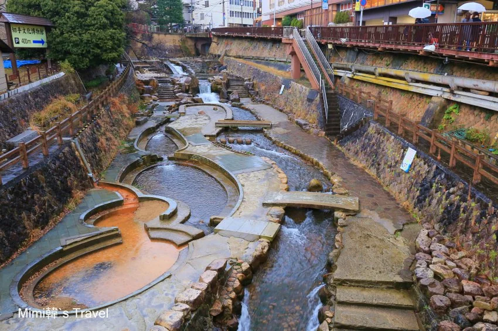

🌲 海拔 860m 避暑 (24°C) ✕ 千年金湯 ✕ 六甲川寧寧紅橋 ✕ 正宗神戶牛 ✕ 港塔夜景神戶・六甲山 860m 避暑 ✕ GREENIA空中運動 ✕ 有馬金之湯 ✕ 神戶牛深度攻略
地理位置：兵庫縣神戶市（JR 大阪搭新快速 21 分鐘直達神戶三之宮）。
建議停留：全日（約 8.5 ~ 9 小時）。
核心亮點：雙軌自由選（【路線 A】六甲花園露台美拍 vs. 【路線 B】GREENIA 樹冠冒險 ✕ 220m 滑索）➔ 12 分鐘飛越峽谷索道 ➔ 太閣「金之湯」足湯舒緩筋肉 ➔ 5 秒現烤生碳酸煎餅 ➔ Mouriya A5 神戶牛 ➔ BE KOBE 港塔夜景。
🌲 六甲山熱血選配：GREENIA 正宗「空中運動」全指南 (mecha forest ✕ 220m 飛翔滑索)
日本百萬 YouTuber 魚團監修由日本超人氣百萬 YouTube 團隊 Fischer's (魚團) 監修的日本最大級戶外冒險樂園！全園設有 7 大國度與 164 項運動設施，其中的「正宗空中運動」需穿戴專業全身安全吊帶（Harness）與防墜扣鎖，體驗 15 公尺高空的真實樹冠探險：
離地 2 ~ 15 公尺 的真木樹冠層架設 6 條挑戰路線共 37 個項目（繩橋、攀岩牆、泰山跳），連動式生命線系統全程防墜，安全且極限。
全長超過 220~256 公尺 的超長鋼索，以時速 30-40km 懸空高速飛越整座山谷，鳥瞰六甲山翠綠樹海，痛快吶喊過癮！
• 痛點：買了 3,000 円一般票才發現空中運動要加買 FOREST 票，當天現場早已售罄！
• 💡 破解：出發前 1~2 週必於官網預訂「FOREST 門票」（5,000~5,500円），鎖定上午 09:30/10:30 場次。
• 痛點：15m 高空死抓鋼索 2 小時，手抖到連寶特瓶蓋都轉不開，隔天全身痠痛。
• 💡 破解：自備止滑手套；玩完立刻搭索道下山泡有馬「金之湯足湯」，鐵鹽溫泉秒消乳酸！
• 痛點：穿裙子、涼鞋、厚底鞋或洞洞鞋被教練拒絕入場，現場被迫買昂貴鞋褲。
• 💡 破解：必穿包頭運動鞋 ＋ 耐磨長褲（防止全身安全吊帶 Harness 摩擦大腿內側破皮）。
• 痛點：8 月底午後熱對流雷雨或強風，空中滑索基於安全會立刻強制關閉。
• 💡 破解：務必預約「09:30~11:30 上午場」，趁清晨山區氣流最穩定、視野最清晰時衝完。
• 痛點：在樹冠上單手自拍，手機滑落 15 公尺深谷灌木叢，螢幕摔爛且找不回。
• 💡 破解：手機必須套上「防墜頸掛繩」並塞進上衣胸口；背包雜物全鎖投幣置物櫃。
• 痛點：順遊水上運動 (Wonder Amembo) 踩空掉進水池，全身濕透狼狽不堪。
• 💡 破解：空中運動必須排在水上運動之前；若要碰水，背包內必備一套乾淨換洗衣物與毛巾。
♨️ 有馬溫泉老街：Mimi韓推薦必吃必買四大名物 ✕ 泉源散策
從六甲有馬空中索道直降有馬溫泉後，漫步於古色古香的湯本坂溫泉街，千萬別錯過這四樣在地限定美味：
① 5 秒現烤生碳酸煎餅（三津森本舖）
元祖老店現場現烤，剛從鐵模鏟下時溫熱柔軟，5 秒後與空氣接觸迅速變為薄脆，只有站在店門口才能品嚐到的奇蹟口感！
② 有馬碳酸汽水 (有馬サイダー)
日本國產碳酸水始祖，強勁細緻的氣泡與懷舊復古瓶身，泡完足湯喝一瓶通體透涼、無比暢快。
③ 金賞 有馬麥酒（在地精釀）
榮獲 Japan Great Beer 金賞的精釀啤酒，麥香濃郁回甘，適合在老街小酌或帶回飯店配宵夜。
④ 竹中肉店黑毛和牛可樂餅
人氣老字號肉舖現炸，外皮金黃酥脆，內餡充滿濃郁黑毛和牛肉汁與綿密馬鈴薯，散步必吃熱食。
📜 英國商人的高山度假夢、太閣金湯傳奇與三分一博志綠建築
• 英國商人 Arthur Groom 的高山避暑莊園：1895 年英國商人亞瑟・格魯姆在六甲山頂建造了關西第一座避暑山莊與日本第一座高爾夫球場，讓海拔 860m 的六甲山成為關西名流夏季逃離酷暑的最高度假殿堂。
• 太閣豐臣秀吉 9 次造訪的「金之湯」與寧寧紅橋：名列日本三大古湯的有馬溫泉，早期為「天皇御湯」，戰國時代太閣豐臣秀吉大舉整頓，多達 9 次攜帶正妻寧寧前來療養。溫泉街入口的「太閣橋」與紅色的「寧寧橋」遙遙相望，是溫泉街代表景觀。其「金湯」富含高濃度鐵離子與鹽分，氧化後呈紅褐色，保溫、殺菌與舒緩疲勞效果極佳。
• 三分一博志「六甲枝垂 (Rokko-Shidare)」：自然體感展望台完全不用電力空調，利用六甲山冬季冰室收集的天然冰塊，在夏季導引山頂微風吹拂室內降溫，幾何檜木枝狀穹頂在藍天下極為震撼。
🗺️ 順向越嶺分步動線指引 (不走回頭路)
從 JR 三之宮或六甲道站搭市巴 16 號 10 分至纜車下站，搭乘經典雙節登山車廂：
・前節車廂無窗開放、後節車廂復古木質，以 26 度陡峭角度穿梭翠綠林蔭隧道直上山頂。
搭山上巴士 10 分鐘至「六甲花園露台」：
・六甲枝垂展望台：參觀三分一博志設計的天然冰室檜木穹頂。
・見晴之塔：登塔 270 度俯瞰神戶港與大阪灣海天一色。
・適合想看海景、拍日系建築、優雅不流汗的旅人。
搭山上巴士至「六甲山 GREENIA」（需提早預約 FOREST 票）：
・mecha forest：穿戴全身安全吊帶挑戰 15m 高空樹冠冒險。
・Long Zip Slide：220m 鋼索高速飛越整座大山谷！
・適合喜愛戶外運動、熱血挑戰與放電的年輕朋友。
💡 兩條路線結束後，皆搭乘「六甲山上巴士」於 12:35 抵達「六甲有馬空中索道山頂站」會合直降有馬溫泉！
搭乘「六甲有馬空中索道」懸空飛越兩座大山之間的深谷，12 分鐘直降至山另一側的「有馬溫泉站」，大片落地全景車窗視野極具視覺震撼！
漫步於 1,400 年湯本坂石疊老街：
・【午餐】有馬 蕎麥麵 むら玄 (Tabelog 3.65 / 米其林推薦)：數寄屋古民家享用十割冷蕎麥麵佐香脆櫻花蝦天婦羅。
・「金之湯」免費露天足湯：脫鞋浸泡 15 分鐘紅褐色金湯，消除登山雙腿疲勞。
・老街美食四大天王：三津森本舖 5 秒生碳酸煎餅、有馬碳酸汽水、竹中肉店可樂餅、有馬金賞麥酒。
・拍照打卡：六甲川親水公園拍經典紅色「寧寧橋」與太閣秀吉雕像。
在有馬溫泉巴士站搭乘「阪急巴士 / JR 有馬急行線」，30 分鐘免轉車直達神戶三宮站前（免去搭電車轉車兩次的繁瑣）：
・Mouriya (モーリヤ) 本店 (Tabelog 3.62)：神戶牛 140 年名店（周杰倫愛店），主廚在鐵板前香煎 A5 黑毛神戶牛，外脆內嫩、油花甘甜。
・Meriken Park (美利堅公園)：漫步在「BE KOBE」前吹海風拍紀念照，欣賞鮮紅色「神戶港塔」璀璨港灣夜景。
從三之宮站搭乘「JR 新快速」，僅需 21 分鐘一路飆回 JR 大阪站，直接搭電梯回 大阪梅田站直結基地 飯店休息！
💬 社群旅人實戰評價精選
「六甲川紅橋景色是有馬溫泉的代表性畫面！漫步在古色古香的溫泉老街，金之湯門口就有免費足湯可以泡，5 秒現烤的碳酸煎餅又脆又香，逛完搭直達巴士半小時就到神戶三宮，吃完神戶牛看港塔夜景，這趟行程規劃太完美了！」—— Mimi韓《有馬溫泉一日遊攻略》
「GREENIA 的 zip slide 大概是我此生溜過最長距離的溜索了，在離地數十米高空進行 256 米長的滑行，滑出去當下心中有說不出的痛快感！玩完還能搭配索道無縫接軌有馬溫泉老街，一次將神戶的多種面貌盡收眼底！」—— 雪倫《樂遊誌 GREENIA 全攻略》
Mimi韓の旅遊指南 — 有馬溫泉一日遊全攻略（老街必吃/泉源/金湯）
樂遊誌 (雪倫) — 神戶六甲山 GREENIA 日本最大級運動公園全攻略